骆驼美食推荐
-
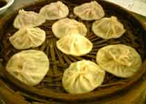
冬菇汤包
柳州的冬菇汤包，脱胎于镇江汤包和武汉四季美汤包，又区别于上述汤包的风味，它有吸收...
-
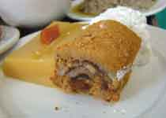
马打滚
这个有趣的怪名小吃，据说为融安人发明，后来在柳州也普遍出现在国营小吃店里，该品种...
-
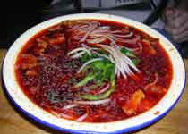
螺蛳粉
柳州的螺蛳粉，闻名遐迩，中国独一无二。螺蛳粉具有酸、辣、鲜、爽、烫的独特风味，位...
-
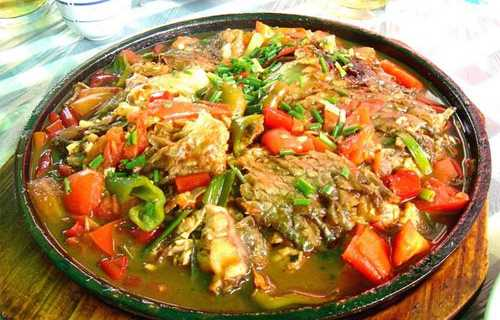
啤酒鱼
啤酒鱼是阳朔有名的特色菜。啤酒鱼的出名，在于用料的讲究，要想做出地道的啤酒鱼，有...
-
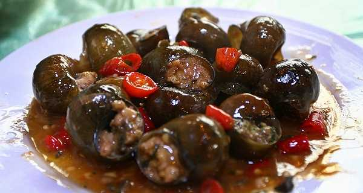
田螺酿
田螺酿是地道的阳朔风味菜。此菜制作起来很费工夫，必须先将田螺漂尽泥浆，切去尾壳，...
-
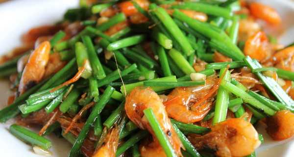
爆炒漓江虾
是桂林典型的风味菜。以桂林漓江里的河虾为原料加入少许桂林三花酒爆炒而成...
-
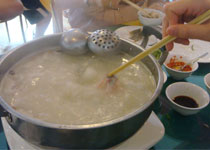
斑鱼火锅
阳朔备受食客喜爱的特色菜之一。斑鱼火锅主要用斑鱼的头、尾、骨腩做成鱼汤，汤成奶白...
-
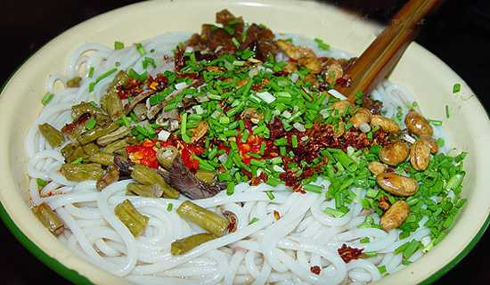
桂林米粉
桂林米粉是桂林最负盛名的风味小吃。主要原料为粉、卤水、盖面菜以及花生米、葱花等。...
-
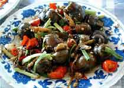
酿菜
用蔬菜或豆制品等作“皮”，用肉或蛋作“馅”，经蒸、煮、煎、汤等方式烹制而成，给人...
-
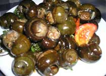
阳朔田螺
阳朔的田螺非常特别。首先是大，最大的差不多有乒乓球大小了；其次是它的味道，完全不...
-
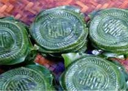
阳朔糍粑
阳朔糍粑制作工艺精细。把上好糯米蒸熟后，用力杵打，直到糯米饭全融，像棉团状，然后...
-
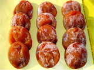
柿饼
阳朔柿饼是阳朔县的四大名果之一，栽培历史悠久，其果呈心脏形，果顶似牛心。其果质肉...